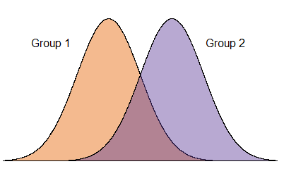
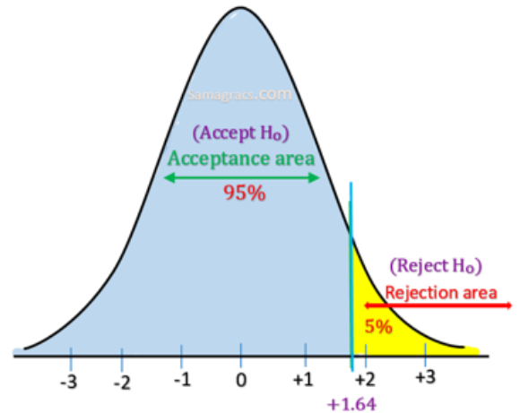
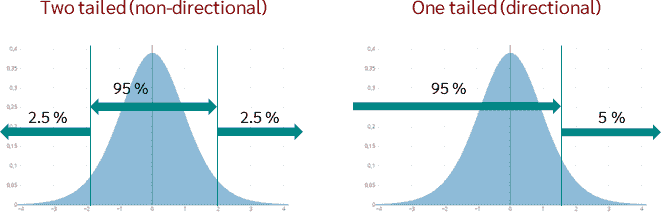
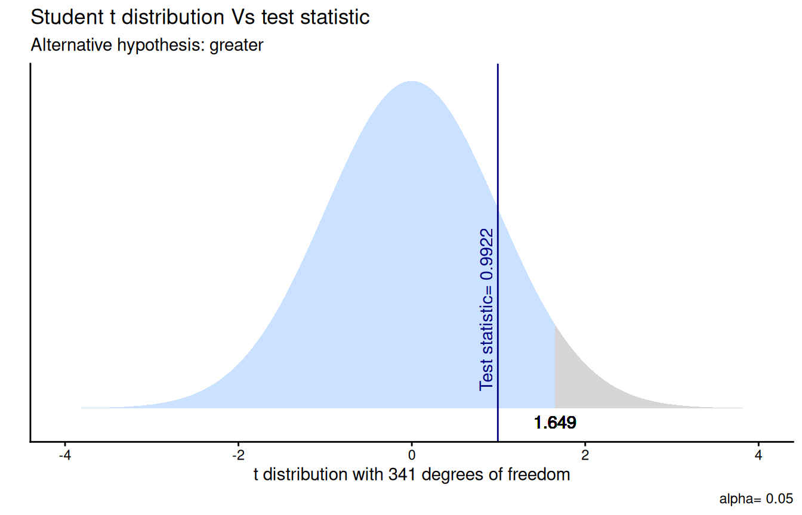
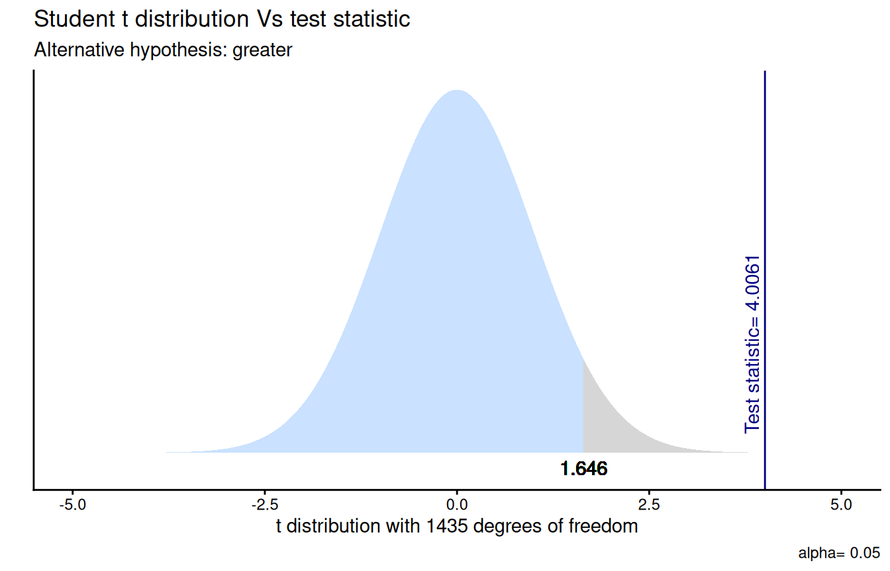

Estadística Correlacional
Inferencia, asociación, y reporte
Juan Carlos Castillo
Sociología FACSO - UChile
2do Sem 2026
correlacional.metodos-facso.org
Inferencia 5:
Hipótesis direccionales y de proporciones
Recordando 5 pasos de la inferencia
Formular hipótesis ( \(H_0\) y \(H_A\))
Obtener error estándar y estadístico de prueba empírico correspondiente (ej: Z o t)
Establecer la probabilidad de error \(\alpha\) (usualmente 0.05) y obtener valor crítico (teórico) de la prueba correspondiente
Cálculo de intervalo de confianza / contraste valores empírico/crítico
Interpretación
Esta clase
hipótesis direccionales de diferencia de medias
hipótesis para proporciones (por ejemplo, mayor o menor qué)
1. Hipótesis direccionales
Comparación entre grupos
gran parte de las hipótesis de investigación se relacionan con diferencias entre grupos, ej:
hombres obtienen mayor salario que las mujeres
los chilenos son más prejuiciosos que los migrantes
ahora se apoyan los cambios más graduales que antes (comparación en el tiempo)

“la sociología comparada no es una rama especial de la sociología, sino que es la sociología misma en tanto deja de ser puramente descriptiva y aspira a dar razón de los hechos”
Durkheim (1895), Les règles de la méthode sociologique, op. cit., p. 137
¿Es posible traducir una pregunta de investigación en una hipótesis de diferencia de medias?
Comparación de medias ( \(\bar{X}\))
la comparación de medias es una manera de contrastar empíricamente teorías e hipótesis de investigación
al traducir a este lenguaje, se puede aplicar inferencia estadística para contrastar la hipótesis planteada
La prueba t
tenemos un valor de diferencia de medias: \(\bar{X}_1 - \bar{X}_2\)
vamos a TRANSFORMAR este valor a un estándar comparable que nos permita evaluar QUE TAN GRANDE es esta diferencia
¿Qué es GRANDE? -> qué tan distinto es de 0 en términos de desviaciones estándar
para esto, la diferencia de medias se divide por su ERROR ESTANDAR - > PRUEBA t
Este valor t de nuesta diferencia de medias (t empírico) se compara con el t crítico
Visualización interactiva: prueba \(t\)
El valor crítico es el punto (o los puntos) en la distribución de un estadístico de prueba que separa la región de aceptación de la región de rechazo en una prueba de hipótesis
Los grados de libertad son la cantidad de información independiente disponible para estimar parámetros o calcular un estadístico
Cada restricción (como conocer un promedio, fijar una suma, etc.) reduce en 1 los grados de libertad.
Por ejemplo, si hay tres números que tienen promedio 10, se pueden elegir libremente 2 de ellos, y el tercero ya está determinado. Por lo tanto, hay 3-1 grados de libertad
\(t\) y probabilidad de error \(p\)
el cálculo de \(t\) (estimado) nos da un valor que puede ser transformado a un valor de área bajo la curva (tal como en Z)
¿cuál es la probabilidad de error (valor p) de un \(t\) específico?
hay que recordar que tanto Z como t tienen promedio 0 y son simétricas, y por lo tanto el 0 divide el área de la curva en 0.5
0.5 es la mayor probabilidad de error (=azar total), y a medida que se aleja del 0.5 disminuye la probabilidad de error
Donde:
qt: función que entrega la probabilidad para un valor \(t\)
df: grados de libertad (degrees of freedom)
lower.tail=FALSE: considera las probabilidades acumuladas hacia la cola superior de la curva
*2: al ser una prueba de diferencias, considera zona de rechazo en ambas direcciones de la curva, por lo que las probabilidades se multiplican por 2
En nuestro ejemplo
La probabilidad de error del \(t\) estimado es de 0.322.
Esto quiere decir es que en la estimación de esta diferencia de medias, nos estamos equivocando aproximadamente un tercio de las veces (lejos del nivel convencional de rechazo de \(H_0\) de 0.05)
p y mayores niveles de confianza
La obtención del valor \(p\) podría también entregar información para rechazar \(H_0\) con un mayor nivel de confianza al establecido
Si bien el p<0.05 es aceptado, en el caso que el p sea menor a 0.01 o 0.001, se reporta por convención el valor p menor
Usualmente en los trabajos de investigación esto se representa con asteriscos: \(^{\ast}p<0.05\), \(^{\ast\ast}p<0.01\), y \(^{\ast\ast\ast}p<0.001\)
A mayor valor \(t\), menor probabilidad de error \(p\)
Test de hipótesis: insumos complementarios
Entonces, se logra rechazar la hipótesis nula cuando:
el intervalo de confianza no contiene el 0
\(t_{calculado} > t_{crítico}\)
\(p_{calculado} < p_{crítico}\)
- o en términos generales convencionales, p<0.05
Test de hipótesis de diferencias en R
Two Sample t-test
data: salario by sexo
t = 0.99215, df = 341, p-value = 0.3218
alternative hypothesis: true difference in means between group 1 and group 2 is not equal to 0
95 percent confidence interval:
-49287.48 149617.63
sample estimates:
mean in group 1 mean in group 2
654585.4 604420.3 Reporte formato APA
“Se realizó una prueba t para muestras independientes para comparar los salarios entre hombres y mujeres. Los resultados indicaron una diferencia no significativa en los salarios entre hombres (M = 654585, SD = 468692) y mujeres (M = 604420, SD = 444666); t(341)=0.9921, p=0.321. El intervalo de confianza del 95% para la diferencia de medias fue [−49288.49;149618.5].
[diferencia no significativa=no se logra rechazar \(H_0\)]
En R con librería report
La prueba t de dos muestras que evalúa la diferencia de salario según sexo (media en el grupo 1 = 654585, media en el grupo 2 = 604420) sugiere que el efecto es positivo, estadísticamente no significativo y muy pequeño (diferencia = 50165, IC del 95% [-49,287.48, 150,000], t(341) = 0.99, p = 0.322).
traducido y con mínima edición
Tipos de preguntas e hipótesis (ej: con promedio(s))
| Pregunta | Hipótesis | Prueba |
|---|---|---|
| A. ¿Existe el promedio en la población? | \(H_{a}: \bar{X}_1 \neq 0\) \(H_{0}: \bar{X}_1 = 0\) |
Dos colas (no direccional) |
| B. ¿Existen diferencias de promedios en la población? | \(H_{a}: \bar{X}_1 - \bar{X}_2 \neq 0\) \(H_{0}: \bar{X}_1 - \bar{X}_2= 0\) |
Dos colas (no direccional) |
| C. ¿Es un promedio (1) superior (o inferior) al otro (2)? | \(H_{a}: \bar{X}_1 - \bar{X}_2 \gt 0\) \(H_{0}: \bar{X}_1 - \bar{X}_2 \leq 0\) |
Una cola (direccional) |

Si bien en teoría las hipótesis direccionales se pueden plantear en ambas direcciones, en general (y por simpleza) se expresan en términos de “mayor que”, quedando la zona de rechazo de \(H_0\) a la derecha
Pasos en test de hipótesis
- Formulación: El salario de los hombres (grupo 1) es mayor al de las mujeres (grupo 2)
\[ \begin{align*} H_{a}: \bar{X}_1 \gt \bar{X}_2 \\ H_{0}: \bar{X}_1 \leq \bar{X}_2 \end{align*} \]
- Obtener error estándar y estadístico de prueba (lo mismo que para el caso anterior)
\[t=\frac{(\bar{x}_1-\bar{x}_2)}{\sqrt{\frac{s_1²}{\sqrt{n_1}}+\frac{s_2²}{\sqrt{n_2}} }}=\frac{50165}{50561}=0.9921\]
3. Probabilidad de error y valor crítico
- seguimos con probabilidad de error ( \(\alpha\) 0.05), pero a diferencia de las no-direccionales no se divide entre 2 (colas), sino que es solo para una

3. Probabilidad de error y valor crítico
4. Contraste
- Recordemos nuestra hipótesis nula:
\[H_{0}: \bar{X}_{hombres} \leq \bar{X}_{mujeres}\]
- Considerando los valores de contraste:
\[t_{estimado}=0.992 < t_{crítico}=1.6\]

5. Interpretación
Method | Alternative | Mean 1 | Mean 2 | M1 - M2 | t | df | p | 95% CI |
|---|---|---|---|---|---|---|---|---|
Two Sample t-test | greater | 654,585.37 | 604,420.29 | 50,165.08 | 0.99 | 341 | .161 | [-33228.46, Inf] |
“Se realizó una prueba t para muestras independientes para examinar si el salario promedio de los hombres (M = 654585, SD = 468692) es mayor que el de las mujeres (M = 604420, SD = 444666), siendo la diferencia entre ambos de 50.165. Los resultados no fueron estadísticamente significativos, t(341)=0.9921, p=0.161. Por lo tanto, con un 95% de confianza no se puede rechazar la hipótesis nula, lo que no permite sustentar la hipótesis inicial (alternativa) que el salario de los hombres es mayor que el de las mujeres.”
¿Qué habría pasado con un tamaño muestral más grande, y/o con un nivel de probabilidad de error distinto?
sub-muestra CASEN 1500 casos
casen_1500 %>% # se especifica la base de datos
dplyr::group_by(sexo = sjlabelled::as_label(sexo)) %>% # se agrupan por la variable categórica y se usan sus etiquetas con as_label
dplyr::summarise(Obs. = n(), Promedio = mean(salario, na.rm = TRUE), SD = sd(salario, na.rm = TRUE)) %>% # se agregan las operaciones a presentar en la tabla
kable(format = "markdown") # se genera la tabla| sexo | Obs. | Promedio | SD |
|---|---|---|---|
| 1. Hombre | 757 | 756712.0 | 852544.0 |
| 2. Mujer | 680 | 605150.2 | 523794.4 |
Method | Alternative | Mean 1 | Mean 2 | M1 - M2 | t | df | p | 95% CI |
|---|---|---|---|---|---|---|---|---|
Two Sample t-test | greater | 756,712.01 | 605,150.23 | 151,561.78 | 4.01 | 1,435 | < .001*** | [89291.57, Inf] |

Actividad práctica
Hipótesis para proporciones
Test para proporciones
además de las inferencias con medidas de tendencia central (como promedios), es posible también realizar inferencia sobre porcentajes/proporciones, ej:
El 20% de l_s chilen_s asiste a la educación superior (hipótesis puntual)
Los hombres y las mujeres tienen un distinto porcentaje de acceso a la educación superior (hipótesis de diferencia)
Las mujeres asisten más a la educación superior que los hombres (hipótesis direccional)
Datos
=========================================================
Statistic N Mean St. Dev. Min Max
---------------------------------------------------------
salario 54,756 680,138.000 645,405.500 8,000 25,000,000
sexo 57,530 1.445 0.497 1 2
educacion 57,530 10.350 2.245 1 15
---------------------------------------------------------e6a_no_asiste. ¿Cuál es el nivel educacional más alto al cual asistió? (x) <numeric>
# total N=57530 valid N=57530 mean=10.35 sd=2.25
Value | Label
-------------------------------------------------------------------------
1 | 1. Nunca asistió
2 | 2. Sala cuna
3 | 3. Jardín Infantil (Medio menor y Medio mayor)
4 | 4. Prekínder / Kínder (Transición menor y Transición Mayor)
5 | 5. Educación Especial (Diferencial)
6 | 6. Primaria o Preparatoria (Sistema antiguo)
7 | 7. Educación Básica
8 | 8. Humanidades (Sistema Antiguo)
9 | 9. Educación Media Científico-Humanista
10 | 10. Técnica, Comercial, Industrial o Normalista (Sistema Antiguo)
11 | 11. Educación Media Técnica Profesional
12 | 12. Técnico Nivel Superior (Carreras 1 a 3 años)
13 | 13. Profesional (Carreras 4 o más años)
14 | 14. Magíster o maestría
15 | 15. Doctorado
<NA> | <NA>
Value | N | Raw % | Valid % | Cum. %
----------------------------------------
1 | 242 | 0.42 | 0.42 | 0.42
2 | 0 | 0.00 | 0.00 | 0.42
3 | 3 | 0.01 | 0.01 | 0.43
4 | 4 | 0.01 | 0.01 | 0.43
5 | 73 | 0.13 | 0.13 | 0.56
6 | 472 | 0.82 | 0.82 | 1.38
7 | 7728 | 13.43 | 13.43 | 14.81
8 | 348 | 0.60 | 0.60 | 15.42
9 | 18879 | 32.82 | 32.82 | 48.23
10 | 280 | 0.49 | 0.49 | 48.72
11 | 7457 | 12.96 | 12.96 | 61.68
12 | 7623 | 13.25 | 13.25 | 74.93
13 | 13166 | 22.89 | 22.89 | 97.82
14 | 1098 | 1.91 | 1.91 | 99.73
15 | 157 | 0.27 | 0.27 | 100.00
<NA> | 0 | 0.00 | <NA> | <NA>Variable ed. universitaria
e6a_no_asiste. ¿Cuál es el nivel educacional más alto al cual asistió? (x) <numeric>
# total N=57530 valid N=57530 mean=0.25 sd=0.43
Value | Label | N | Raw % | Valid % | Cum. %
------------------------------------------------------------------
0 | Menos que universitaria | 43109 | 74.93 | 74.93 | 74.93
1 | Universitaria o más | 14421 | 25.07 | 25.07 | 100.00
<NA> | <NA> | 0 | 0.00 | <NA> | <NA>| e6a_no_asiste. ¿Cuál es el nivel educacional más alto al cual asistió? |
Sexo | Total | |
|---|---|---|---|
| 1. Hombre | 2. Mujer | ||
| Menos que universitaria |
25102 78.6 % |
18007 70.3 % |
43109 74.9 % |
| Universitaria o más | 6818 21.4 % |
7603 29.7 % |
14421 25.1 % |
| Total | 31920 100 % |
25610 100 % |
57530 100 % |
| χ2=524.222 · df=1 · &phi=0.095 · p=0.000 | |||
\(p_m - p_h=0.297-0.214=0.083\)
El porcentaje de mujeres con educación universitaria es 8.3% superior en las mujeres
¿Es significativa esta diferencia?
Diferencias entre proporciones
Establecer las hipótesis (y definir si son o no direccionales)
Calcular error estándar
Estimar estadístico de prueba (Z)
Establecer valor crítico de la prueba (de acuerdo a un cierto nivel de confianza)
Contraste e interpretación
Diferencias entre proporciones
1. Establecer las hipótesis
¿Existen diferencias entre el porcentaje de mujeres y hombres con nivel educacional universitario?
\[H_{a}: p_{mujeres} - p_{hombres} \neq 0\] \[H_{0}: p_{mujeres} - p_{hombres}= 0\]
Diferencias entre proporciones
2. Cálculo de error estándar (SE)
El SE para una proporción es:
\[SE_p=\sqrt{\frac{p(1-p)}{n}}\]
Y para diferencia de proporciones:
\[SE_{p_1 - p_2}=\sqrt{\frac{p_1(1-p_1)}{n_1}+\frac{p_2(1-p_2)}{n_2}}\]
Estimación de error estándar
\[ \begin{align*} SE_{p_a - p_b}&=\sqrt{\frac{p_a(1-p_a)}{n_a}+\frac{p_b(1-p_b)}{n_b}} \\\\ SE_{p_m - p_h}&=\sqrt{\frac{0.297(1-0.297)}{7603}+\frac{0.214(1-0.214)}{6818}} \\\\ SE_{p_m - p_h}&=\sqrt{\frac{0.209}{7603}+\frac{0.168}{6818}}=\sqrt{0.0000275+0.0000246}=0.00722 \end{align*} \]
Diferencias entre proporciones
3. Cálculo de estadístico de prueba
Para diferencia de proporciones se utiliza la prueba \(Z\)
\[Z_{est}=\frac{p_m - p_h}{SE_{p_m -p_h}}=\frac{0.083}{0.0072}=11.528\]
Diferencias entre proporciones
4. Establecer valor crítico de prueba
Y comparamos este valor con el Z crítico para un \(\alpha=0.05\) de dos colas (porque es hipótesis de diferencia)
Diferencias entre proporciones
5. Interpretación
En este caso, nuestro \(Z_{est}=11.528 > Z_{crít}=1.96\), por lo tanto se rechaza \(H_0\)
La proporción de universitarias y universitarios es diferente, con un 95% de confianza
Diferencias entre proporciones
(6). Construcción intervalo de confianza
Para obtener un intervalo de confianza, a la diferencia de proporciones se le suman/restan errores estándar multiplicados por el valor Z crítico según nivel de confianza, en este caso \(\alpha/2=0.05/2\) (prueba de dos colas)
\[ \begin{align*} p_1 - p_2 &\pm Z_{crit_{\alpha/2}}*SE_{p_a - p_b} \\ 0.297-0.214 &\pm1.96*0.00722\\ 0.083&\pm 0.0142 \\ \end{align*} \]
\[CI[0.07;0.09]\]
Podemos entonces decir con un 95% de confianza que la diferencia de proporción de universitari_s entre hombres y mujeres se encuentra entre un 7% y un 9%
Estimación directamente en R con prop.test
2-sample test for equality of proportions with continuity
correction
data: c(7603, 6818) out of c(25610, 31920)
X-squared = 524.22, df = 1, p-value < 0.00000000000000022
alternative hypothesis: two.sided
95 percent confidence interval:
0.07606640 0.09049306
sample estimates:
prop 1 prop 2
0.2968762 0.2135965Dos cosas importantes para reporte de este output:
probabilidad de error p: si es menor al nivel de error especificado ( \(\alpha\)), se rechaza la hipótesis nula. En este caso, las diferencias entre grupos son significativamente distintas de cero.
el intervalo de confianza: rango de valores con un 95% de confianza para la diferencia estimada.
Hipótesis direccionales de proporciones
Paso 1: hipótesis
¿Es superior la proporción de mujeres con educación superior?
En este caso,
\[H_{0}: p_{mujeres} \leq p_{hombres}\]
En relación a la siguiente hipótesis alternativa:
\[H_{a}: p_{mujeres} \gt p_{hombres}\]
Hipótesis direccionales de proporciones
Paso 2 (SE) y 3 (estadístico de prueba) igual que para hipótesis no direccionales
Hipótesis direccionales de proporciones
Paso 4: Valor crítico de prueba
Valor crítico de Z para una cola
Hipótesis direccionales de proporciones
Paso 5: Interpretación
Valor crítico se compara con el valor estimado de Z para la diferencia de proporciones,
En este caso, \[Z_{est}=11.528 \gt Z_{crít}=1.644\]
Por lo tanto se rechaza \(H_0\), con un 95% de confianza podemos decir que la proporción de mujeres universitarias es mayor en mujeres que en hombres.
Estimación directamente en R con prop.test
2-sample test for equality of proportions with continuity
correction
data: c(7603, 6818) out of c(25610, 31920)
X-squared = 524.22, df = 1, p-value < 0.00000000000000022
alternative hypothesis: greater
95 percent confidence interval:
0.07722045 1.00000000
sample estimates:
prop 1 prop 2
0.2968762 0.2135965Visualización interactiva: prueba de diferencia de proporciones
Resumen de inferencia
- La inferencia estadística permite sacar conclusiones sobre una población a partir de una muestra.
- Se basa en un contraste de hipótesis, que puede ser direccional o no direccional.
- La lógica de falsación busca rechazar la hipótesis nula, y se basa en el cálculo de un estadístico de prueba y su comparación con un valor crítico.

Estadística Correlacional
Inferencia, asociación, y reporte
Juan Carlos Castillo
Sociología FACSO - UChile
2do Sem 2026